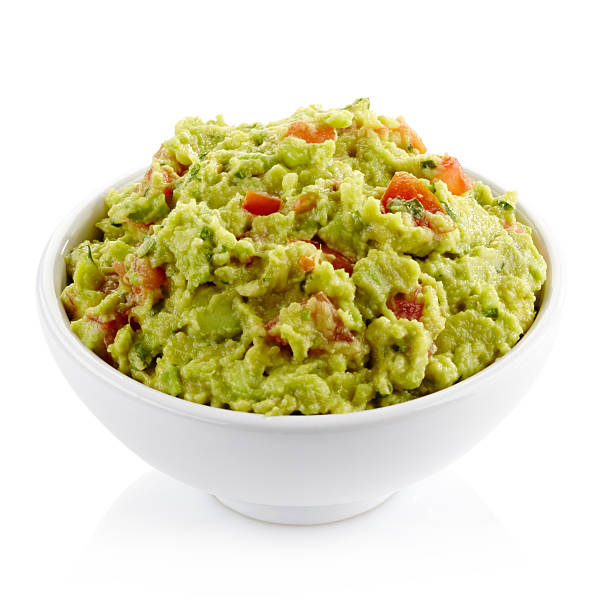

Home
Guacamole

Descripcion
Un dip fresco y cremoso hecho con aguacates, tomate y limón, ideal como entrada o acompañamiento.
Ingredientes
- 2 aguacates maduros
- 1 tomate (jitomate) picado
- 1/4 de cebolla picada
- 1 chile serrano picado (opcional)
- Jugo de 1 limón
- Sal al gusto
Preparacion
- Parte los aguacates, retira la pulpa y machácala en un tazón con un tenedor.
- Añade el tomate, la cebolla y el chile serrano picado.
- Exprime el jugo de limón sobre la mezcla y sazona con sal al gusto.
- Mezcla todo bien y sirve acompañado de totopos o como acompañamiento.